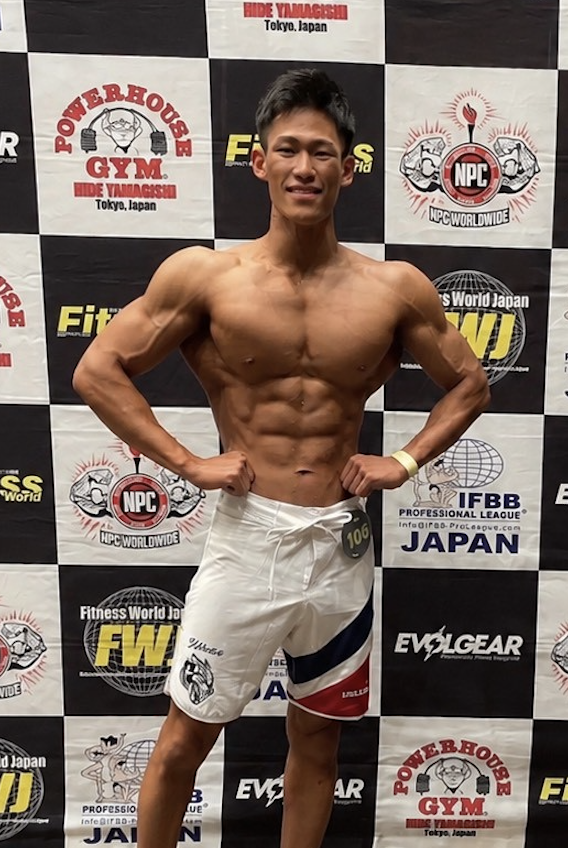
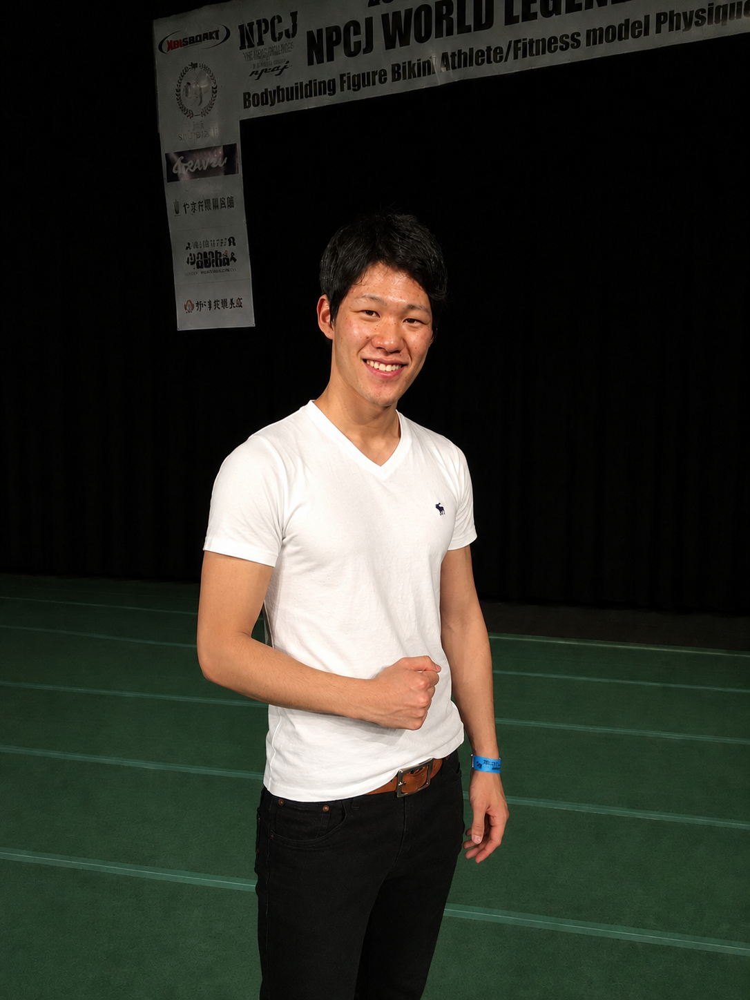
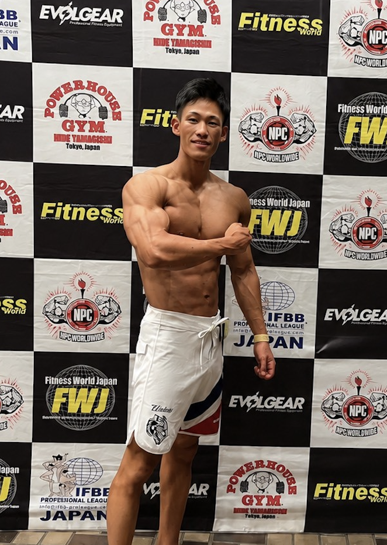
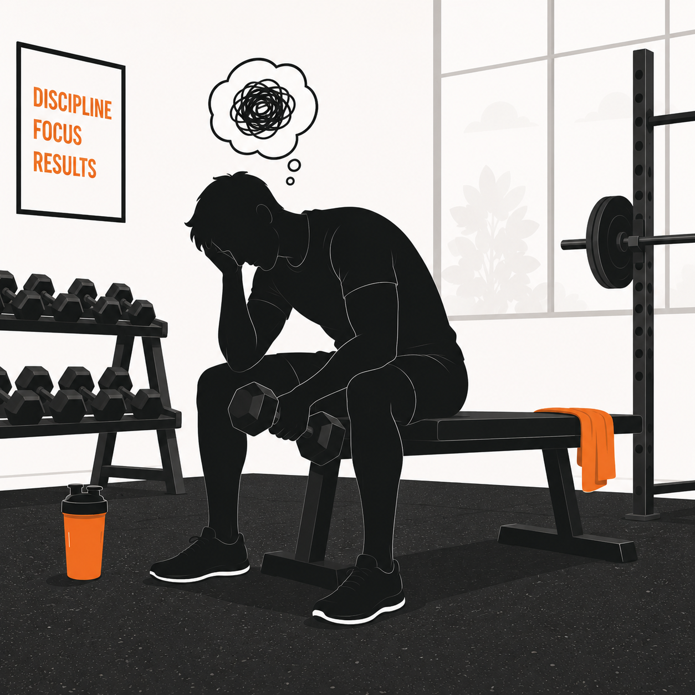
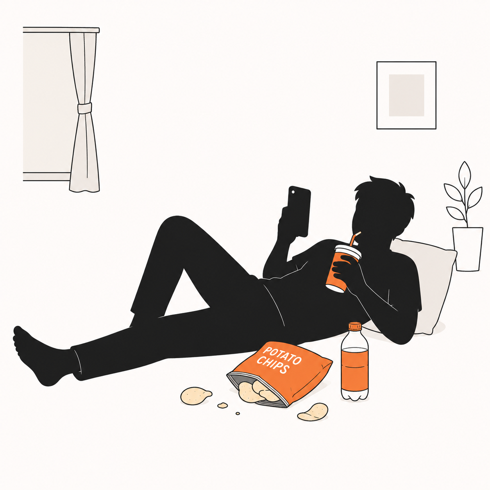
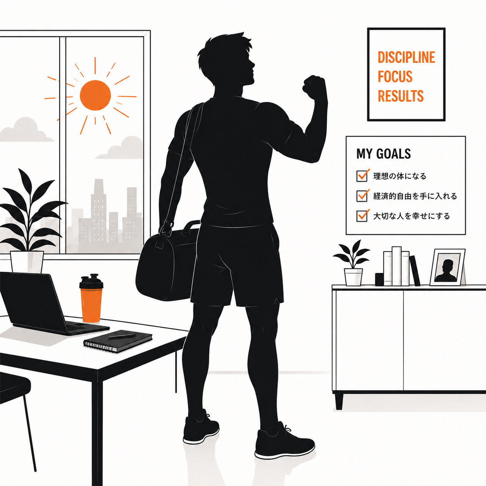
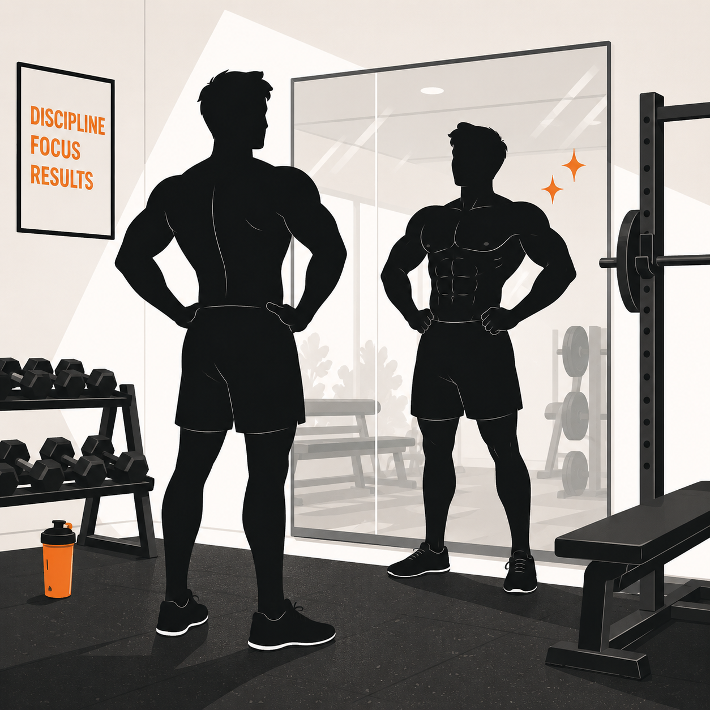
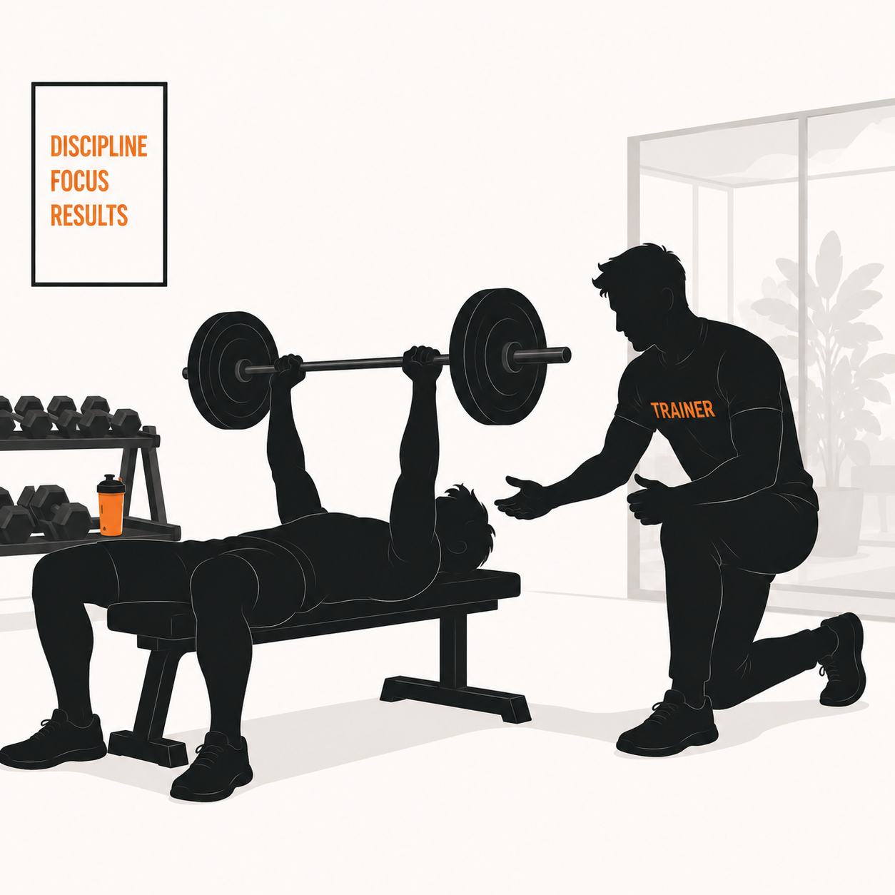

私は最初から強い人間ではありませんでした。元々は身体が細く、自分に自信が持てない毎日を過ごしていました。しかし筋トレに出会い、試行錯誤を繰り返しながら体と心を磨き続けたことで、自分を変えることができました。
だからこそ、現状を変えたくて悩んでいるあなたの気持ちが、誰よりもよくわかります。ただ筋肉を動かすだけの指導はしません。あなたの「本質的なマインド」に訴えかけ、心に火を灯し、人生を変えるきっかけを作ることが、私の使命です。
LINEで無料相談する

昔の僕は、ガリガリで自信ゼロ。鏡を見るたびに「このままじゃダメだ」と思いながら、悶々とした毎日を繰り返していました。自分を変えたくてジムに通い始めたものの、何をすればいいか分からず、YouTubeを真似しても体は変わらない。何度も心が折れかけた時期があります。
転機はパーソナルトレーニングとの出会いでした。正しい知識に沿って積み重ねた結果、体は驚くほど変わり、フィットネス大会で優勝することができました。けれど本当に手に入れた一番大きなものは、トロフィーではなく「自分のことを好きになれた」という感覚でした。
体が変われば、姿勢が変わり、表情が変わり、毎日の景色が変わる。何も持っていなかった僕が、筋トレを通じて自信と「目標を持って生きる楽しさ」を手に入れられた。この成功体験を、かつての自分と同じように悩む人にも届けたい——それが僕の指導の原点であり、何より大切にしている想いです。
人生を豊かにする方法はたくさんあるなかで、「筋トレ」を選んでくれたあなたには、遠回りせず最短で結果を出してほしい。本気で自分を変えたい方の隣で、最後まで伴走します。





ガリガリだった過去から試行錯誤を重ねて身体を鍛えてきた経験があるからこそ、 言葉に圧倒的な説得力とリアリティが宿ります。
マニュアル通りの指導はしません。一人ひとりの体組成・目標・生活リズムをもとに、あなただけのプログラムを設計します。筋肉だけでなく、心に火を灯すアプローチ。本質から変わるから、結果も人生も変わります。
トレーニングの時間だけでなく、食事・休息。日常の生活習慣まで含めた「変わり続けるための土台」をつくります。
流れ作業のセッションは行いません。毎回あなたの状態を確認しながら、最適な内容をその場で調整します。
ダイエットや筋トレが続かないのは、あなたに根性がないからではありません。人間の行動は、ほとんどが「仕組み」で決まります。
行動科学では「行動＝意図×環境」と言われ、意思よりも環境設計が結果を左右します。本メソッドでは、この科学的なアプローチを使い、あなたの目標を無理なく続けられる仕組みに落とし込みます。
食事・トレーニング・生活習慣を、少人数だからこそ一人ひとりに合わせて深く確認していきます。いきなり大人数で募集するのではなく、本気で変わりたい方に絞って伴走します。
空き状況・プランの詳細は、公式LINEまたは個別DMにてご案内しています。目的や現在のライフスタイルに合わせて最適なプランを一緒に整理し、ご提案します。
LINEまたはフォームよりご連絡ください。ご希望日時をお知らせいただければ、すぐにご返信いたします。
現在の身体の状態・目標・生活習慣をヒアリングします。まずはお話をお聞かせください。
実際のトレーニングを体験いただきます。あなたの現在の状態に合わせたペースで進めます。
体験後、あなたの目標に合わせたプランをご提案します。その場で入会を決めていただく必要はありません。
LINEで無料相談にお申し込みいただいた方全員に、
私が実際に使用している3つのスプレッドシートをプレゼント！
睡眠時間・起床時間・運動量・体調などを毎日チェック形式で記録。生活リズムの「ブレ」を一目で確認できます。
記録を続けることで、結果が出やすい行動パターンが見える化されます。改善ポイントを自分で発見できる、長く使える1枚です。
毎日の食事内容を入力すると、PFC（タンパク質・脂質・炭水化物）バランスとカロリーが自動で算出されます。
目標体重・体脂肪率に合わせた必要量との差分が一目でわかるため、「何をどれだけ食べるべきか」が迷わず判断できます。
種目・重量・回数・セット数をシンプルに記録。前回の記録が自動で表示されるため、毎回の目標設定が迷わず行えます。
重量推移がグラフで可視化されるため、成長の実感と停滞期の早期発見が可能。モチベーション維持にも直結します。
通常は有料のマンツーマン個別相談を、人数限定で無料でご提供します。あなたの目標・現状・お悩みを直接お聞きし、最適な方向性を一緒に整理します。
特典を全て受け取る運動が久しぶり・初めてでも大丈夫ですか？
全く問題ありません。体験時のカウンセリングで現在の状態を確認した上で、無理のないペースでスタートします。
食事管理のサポートはありますか？
はい。トレーニングの指標に加え、食事・生活習慣へのアドバイスも行います。無理な制限ではなく、続けられる習慣をご提案します。
オンラインコーチングはどのように進みますか？
LINEやビデオ通話を活用して、週ごとのトレーニング内容・食事・体重の変化をフィードバックしながら進めます。
入会をせかされることはありますか？
ありません。体験後はプランのご案内をしますが、その場で決断を求めることは一切していません。じっくりご検討ください。